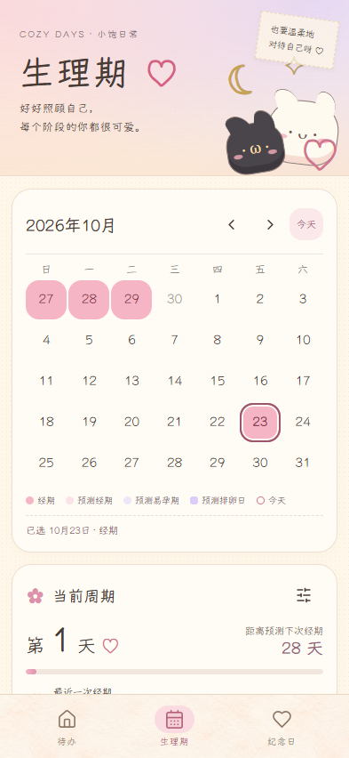
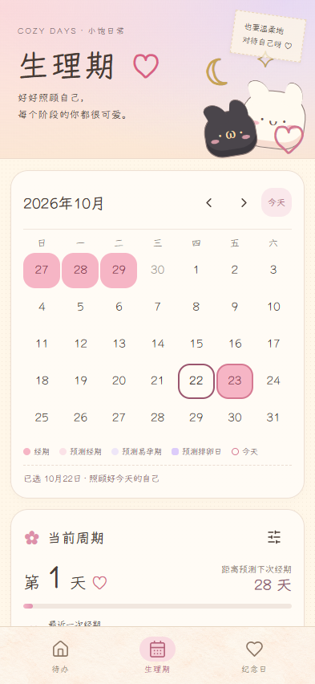
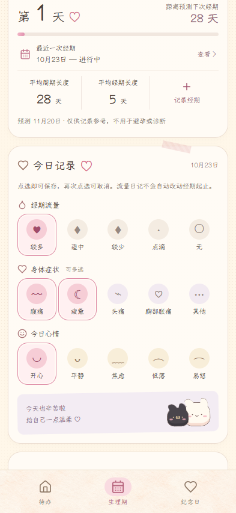
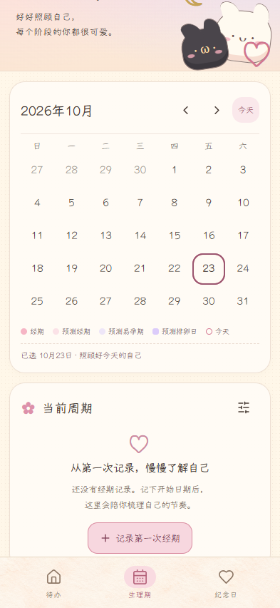
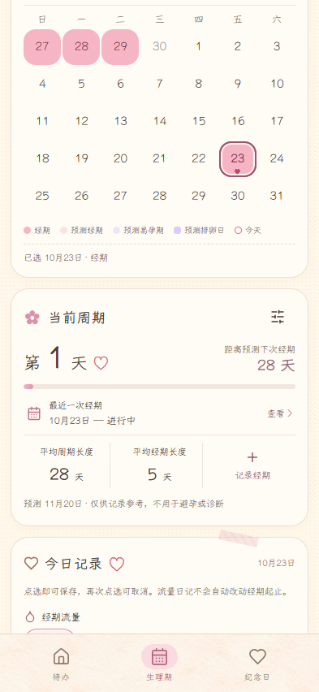

生理期 · 温柔记录每个阶段
打开应用，点击底部「生理期」 →
真实 UI、真实 Playwright 截图；使用独立浏览器上下文及合成数据，不会向应用写入演示记录。截图视口 393 × 852，日期固定为 2026-10-23。页面可以纵向滚动。
可验收：月份切换、日期选择、周期录入及历史修改/删除、流量/多选症状/心情、提醒与刷新保留。猫咪插画暂用独立占位组件。
测试与来源：验证记录。仅本地保存；预测供记录参考，不用于避孕或诊断。
1 · 生理期首页
2 · 日历日期选中
3 · 今日记录多选状态
4 · 首次使用空状态
5 · 周期信息更新后